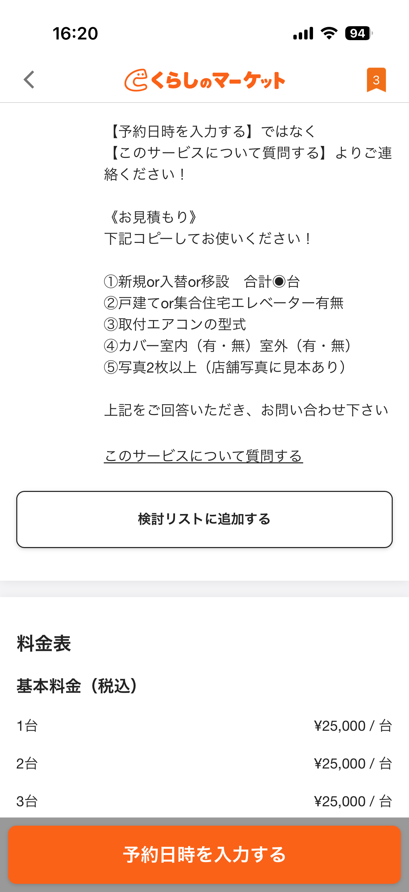

※ 本記事にはアフィリエイト広告が含まれています。
ここ数年すっかりテレビを見なくなっていて、驚くほどニュースが耳に入ってこなくなりました。そんな私が、2027年問題について知ったのは、いつもXでトレンドチェックを欠かさない次男との会話からでした。これから、ぴかりんご家のエアコン買い替えたときの一部始終のお話をしようと思います。
この記事を読むとわかること
- エアコンの選び方。私の方法。
- エアコンを買い換える際に用意しておくと良いもの。
- ぴかりんご家の最適解（機種選び・予算）。
- くらしのマーケットでの業者選び。
- ネットで購入してエアコン設置業者に依頼した体験談と感想。
2027年問題とは？ なぜ今エアコンを買ったのか
エアコンの買い替えは大きな出費になるので、一昨年は１階の和室の１台、昨年は２階の長男の部屋の１台と、少しずつ買い替えを進めておりました。残るは、夫と次男の部屋。例にもれず今年も１台買いかえようかなあ。なんて呑気に思っていた私でしたが、2027年４月以降、今までのようなリーズナブルな価格帯のエアコンが市場から消える！と知れば、話は別です。
痛い出費にはなりますが、夫の部屋のエアコンは１５年前に購入したもの。次男の部屋に至っては、我が家と同い年で、なんと２８年前のエアコンです！！
私のイメージの中では、夫の部屋の１５年前に購入したエアコンでさえ「買い換えたばかり」のような気持ちでいたので、本当に驚きました。まるで玉手箱の煙を浴びて一気に老化した浦島太郎のような気分です。
５月に私の住む自治体で省エネ家電導入補助金のような制度が始まったので夫に伝えてはいましたが、そのときには夫が全く乗り気でなかったため、１か月遅れで重い腰をあげて最寄りの家電量販店に行きました。すると、なんと型落ちモデルはすべて売り切れ！自治体の補助金も利用率７割到達という状態。工事完了後に申請が必要なため、補助金を当てにした購入も難しそう。完全に出遅れてしまいました（涙）
家電量販店で得た情報と見積もり
家電量販店を２軒回りましたが状況は同じ。それでも、エアコン業界に詳しい店員さん（おそらく大手エアコンメーカーのOG）から面白い裏事情を聞くことができたり、エアコン選びのアドバイスをいただいたりして、見積もりを２台分いただいて帰宅しました。
家電量販店では、魅力的なミドルクラス・ハイスペックモデルが顔を揃えています。お財布と相談しながら少しでも上位モデルを買いたいと考えていた私でしたが、見積もり内容は以下の通りでした。
| 機種 | 家電量販店価格 |
|---|---|
| 三菱 霧ヶ峰 MSZ-4026S-W（14畳） | 149,760円（店頭割引後見積もり価格） |
| 三菱 霧ヶ峰 MSZ-2226-W（6畳） | 105,000円（店頭割引後見積もり価格） |
工事費を含む総額はなんと348,000円！！ ２階にある次男の部屋のエアコンの室外機を屋根置きから１階置きに変える特殊工事も含まれており、現場の状況次第でさらに１万円前後のプラスになる可能性もあるとのことでした。
げっそりしてしまった私には仕切り直しが必要でした。夫は不満そうに呆れていましたが、腹落ちする形で購入を決めたかったのです。
エアコンを買う前に準備しておくと良いもの
エアコンはどの機種を買っても必ず取り付けできるとは限りません。家電量販店に行く際や業者に問い合わせる際は、以下を準備しておくとスムーズです。
- 旧機種の取扱説明書（または品番）
- エアコン専用コンセントの種類がわかる写真（100V か 200V か）
- 室内機・室外機の設置場所の写真
- 自宅の外観写真（２階から１階に配管を延ばす場合）
- 外壁の色がわかるもの（化粧カバーの色を選ぶため）
カーテンレールや窓がエアコン室内機に干渉しないか、コンセントが 100V か 200V か、なども必ず確認しましょう。
価格ドットコムでリサーチ ネット購入へ挑戦
「2026年度版の最新モデルしかないのであれば、ネットの方が安いかも」という淡い期待を抱きながら帰宅。帰宅後、翌日まで２日がかりで家事の合間に懸命にリサーチしました。
リサーチでお世話になったのは価格ドットコムです。見積もりを取っていた機種をネットで比べてみると……
| 機種 | 家電量販店 | ネット最安値 |
|---|---|---|
| 三菱 霧ヶ峰 14畳 MSZ-4026S-W | 149,760円 | 168,487円 |
| 三菱 霧ヶ峰 6畳 MSZ-2226-W | 105,000円 | 69,500円 |
14畳モデルは家電量販店の店頭割引後見積金額の方が２万円弱安く、6畳モデルはネットの方が３万円強安い、という結果でした。必ずしもネットが安いわけではありませんが、２台で価格調整がされていた可能性もありそうです。
実は以前、長男のエアコン購入時にリベシティで紹介されていた「ネットで購入→くらしのマーケットで設置」の方法に挑戦して失敗した経験があります。事前確認に4,000円の出張費を払ったところ、選んだ機種が設置できないことが判明。差額1,000円の「キャンセル無料」オプションで本体代は損せずに済みましたが、結局店頭購入することとなり、5,000円近くを無駄にした苦い思い出です。今回も同じ失敗は避けたいと思いつつ、店頭購入の見積額のあまりの高さに再挑戦することにしました。
機種をスタンダードモデルに変更した理由
リサーチをするうちに、機種の選択を変更することにしました。理由は2つです。
①本体価格を抑えて工事費の不確定リスクに備えたかった
次男の部屋は室外機の設置場所を屋根置きから１階置きに変える特殊工事が必要で、工事が完了するまで最終費用が確定しません。本体代を抑えることで、トータルの予算を管理しやすくしました。
②専門家の多くがスタンダードモデルを推奨していた
「お掃除機能付き＝便利」と思いがちですが、エアコン洗浄業者に依頼する際、お掃除機能付きモデルは割高です。お掃除機能があろうとなかろうと、エアコンはどの機種も結局カビます！ それなら、スタンダードモデルを入れて定期的なメンテナンスに予算をかけた方がコスパが良いのです。
また、余談ですが、取り扱いメーカーは家電量販店によって違います。業界に詳しい店員さんによると、ヤマダ電機ではダイキンの取り扱いがないとのこと。いろいろな大人の事情があるのですね……。
なお、12畳の部屋設置用に14畳モデルを選んでいた理由は、店頭で店員さんに相談した際、夫が12畳の部屋のコンセントが200Vタイプと勘違いしていたからです。帰宅後、調べてみると、ぴかりんご家の12畳の部屋の電源は100Vで、旧エアコンはなんと8畳タイプで十分効いていたことがわかりました。調べていくと専門家の多くが12畳の部屋でも10畳モデルを推奨していることがわかり、最終的に10畳モデルに落ち着きました。
ぴかりんご家の最適解：ダイキン スタンダードモデル
私が最終的に選んだのは、ダイキンのスタンダードモデルです。
| 機種 | 部屋 | 購入価格 |
|---|---|---|
| ダイキン S226ATES-W（6畳タイプ） | 次男の部屋（6畳） | 70,290円（2,902pt付与） |
| ダイキン S286ATES-W（10畳タイプ） | 夫の部屋（12畳） | 87,800円（3,600pt付与） |
合計 158,090円で購入しました。楽天スーパーセールで付与されるポイントを含めると、実質的な本体代は約15万円まで抑えることができました。
（買い回りのポイントもこれとは別に後で付与されます！）
✦ ぴかりんごが購入 ✦
ダイキン S226ATES-W（6畳タイプ）
ぴかりんご家・次男の部屋に選んだスタンダードモデル。シンプルな機能で故障リスクが低く、コスパ重視の方に。
![[商品価格に関しましては、リンクが作成された時点と現時点で情報が変更されている場合がございます。]](https://hbb.afl.rakuten.co.jp/hgb/55488990.e2bdceae.55488991.628891a5/?me_id=1203707&item_id=10358813&pc=https%3A%2F%2Fthumbnail.image.rakuten.co.jp%2F%400_mall%2Fhomeshop%2Fcabinet%2Fmus10%2Fs6302-hsg-5001_1.jpg%3F_ex%3D240x240&s=240x240&t=picttext "[商品価格に関しましては、リンクが作成された時点と現時点で情報が変更されている場合がございます。]")

※ 楽天アフィリエイトのリンクを含みます
✦ ぴかりんごが購入 ✦
ダイキン S286ATES-W（10畳タイプ）
ぴかりんご家・夫の12畳部屋に選んだスタンダードモデル。専門家が推奨するシンプルイズベストの一台。
![[商品価格に関しましては、リンクが作成された時点と現時点で情報が変更されている場合がございます。]](https://hbb.afl.rakuten.co.jp/hgb/5548a585.cb87f82a.5548a586.235c2d28/?me_id=1218946&item_id=10186632&pc=https%3A%2F%2Fthumbnail.image.rakuten.co.jp%2F%400_mall%2Fkaden-sakura%2Fcabinet%2Fgazou80%2Fs286ates-w.jpg%3F_ex%3D240x240&s=240x240&t=picttext "[商品価格に関しましては、リンクが作成された時点と現時点で情報が変更されている場合がございます。]")
※ 楽天アフィリエイトのリンクを含みます
ちなみに、エアコンの品番は、同じ商品でも家電量販店・住宅設備工事店・ネットショップなどで違うことがあります。そのため、店頭の品番を入力してもネットで表示されないことがあるのはそのためです。是非今後の参考にしてみてくださいね。
くらしのマーケットで設置業者を探す
商品を購入したら、次はエアコンの設置工事業者選びです。業者の予約は必ず商品を確保してから依頼しましょう。商品が工事日に届かずキャンセル料が発生しては大変です。
くらしのマーケットでの流れは以下の通りです。
- アプリをインストールして登録
- サービスカテゴリの「エアコンの取り付け」を選択 → 郵便番号入力でエリアを選択
- 依頼内容を入力 → 工事希望日を選択
- 対応業者が表示されるので、サービスページでレビューと料金を確認
- 「このサービスについて質問する」からチャットで見積もり依頼・質問
- 見積もり額が確定したら「予約日時を入力する」から正式にリクエスト
くらしのマーケットに不慣れな私が気づいたのは、見積もり依頼や質問の場所がわかりにくいこと。「このサービスについて質問する」をタップするとチャットが開きます。目立つ「予約日時を入力する」ボタンと混同しないように注意！

最初に表示される金額は概算なので、電圧変更・穴あけ・室外機置き場の変更など特殊工事がある場合は状況をしっかり伝えて、工事当日に追加請求が発生しないよう細かく確認しておくことが大切です。
私の場合、特殊工事（屋根置き→１階置き 配管延長）があったためかなり難航しましたが、特殊工事なしの方なら業者選びはスムーズだと思います。工事件数とレビューをよく確認して選びましょう。
工事費の見積もり
ぴかりんご家の工事見積もりは170,500円〜176,500円でした（特殊工事があるため確定額は当日まで不明）。
この業者さんの標準工事費は1台43,000円。2台で86,000円。業者さんによって1台33,000円〜50,000円と幅があります。今回のような特殊工事に対応できる業者さんは少なく感じました。焦らず慎重に選びましょう。
当初の予算は30万円以内でしたが、工事費を含めると約33万円で予算を約3万円オーバーしました。
【工事後の追記】2026年7月8日に無事、設置工事が完了しました。当日は2人作業が1人対応になったことなどで、工事費は見積もりより安い156,500円に。エアコン買い替えの総額は314,890円でおさまりました。当日の流れ・所要時間・最終費用の全内訳・失敗談は、設置工事編（当日レポート）にまとめています。
節約できた14,000円の工夫
工事見積もりのうち、以下の費用を自分で節約しました。
- 室外化粧カバー処分費 2,000円×2台分＋屋根置き架台処分代 3,000円 計 7,000円→ 自分でプラスチックカッターで小さくして普通ゴミとして処分、できなければ自治体の粗大ゴミとして処分。多少の手間はあるけれど安いので除外（1,000円以下の見込み）
- 防虫キャップ代 3,500円×2台分 計 7,000円→ 100円ショップの防虫キャップを購入して取り付けるか、ストッキングをふんわりかけて輪ゴムで留めて定期交換する方法に変更するので除外（かかっても110円程度）
あれもこれも業者さん任せにすると万単位のお金がとんでいきます。自分でできることは自分でやる精神が大切です。
室外機の保管は天地無用！
商品到着から工事日までの間、室外機を横転させないようにしましょう。横倒しにすると故障の原因になります。開梱も業者さんにお任せするのがベターです。我が家は男手が3人いたことと、商品到着から設置工事当日まで4日の開きがあったため、注意点を伝えたうえで、各設置場所の保管できるスペースまで運んでおいてもらいました。
よくある質問（2027年問題とエアコン）
Q. 2027年問題って、結局なにが変わるの？
A. 2027年4月以降、エアコンに使われる冷媒が省エネ性能の高い次世代タイプへ切り替わり、今までのようなリーズナブルな価格帯のモデルが市場から姿を消していくと言われています。型落ち・エントリーモデルを安く買えるのは今のうち、という状況です。
Q. 古いエアコンは、まだ壊れていなくても買い替えるべき？
A. 新しいものをすぐ買い替えるのはもったいないですが、10年以上使っているなら検討の余地ありです。省エネ性能が上がって電気代が下がりますし、2027年以降は本体価格の上昇が予想されるためです。
Q. ネット購入＋くらしのマーケットは、誰にでもおすすめ？
A. 手間をかけてでも予算を抑えたい人、ネットやアプリに抵抗がない人には向いています。逆に、機種選びや業者を相談しながら決めたい人、特殊工事（屋根置き→1階置きなど）が必要な人は、店頭購入や慎重な業者選びのほうが安心です。
まとめ
エアコンの購入と設置の依頼を別々にするのは初めてでしたが、自分で手をかけた分、予算面でも満足のいく取引ができました。
- 2027年問題で型落ちモデルは売り切れ続出。早めに動くことが大切
- ミドル・ハイスペックよりスタンダードモデルがコスパ良し（専門家も推奨）
- ネット購入+くらしのマーケットで設置、節約可能だが特殊工事は難航する場合あり
- 室外機の保管・運搬は天地無用を守ること
- くらしのマーケットの質問ボタン（見積もり依頼）は「このサービスについて質問する」
皆さんも是非チャレンジしてみてくださいね。設置工事当日の流れ・所要時間・最終費用（総額314,890円）・失敗談は、設置工事編（当日レポート）にくわしくまとめました。あわせてどうぞ！
洗濯機やお掃除機の話もあわせてどうぞ。